fullstack developer
jestem:
|
Nazywam się Patryk i jestem Full-stack Web Developerem zajmującym się tworzeniem i rozwijaniem stron internetowych, portali oraz aplikacji webowych. Doświadczenie zawodowe zdobywałem, pracując z HTML, CSS, JavaScript, PHP, WordPress i MySQL, łącząc technologie frontendowe i backendowe. Koncentruję się na funkcjonalności, wydajności, użyteczności oraz dopasowaniu rozwiązań do potrzeb użytkowników i celów biznesowych.
Do projektowania oprogramowania podchodzę kompleksowo, uwzględniając nie tylko pojedyncze funkcjonalności, ale również architekturę całego systemu i współpracę jego komponentów. Stawiam na modularność, separację odpowiedzialności, ograniczanie zależności i czytelność kodu. Zależy mi na tworzeniu spójnych, rozszerzalnych i łatwych w utrzymaniu rozwiązań, które można rozwijać o nowe funkcjonalności bez konieczności przebudowy istniejących modułów.
W ramach projektów własnych rozwijam autorskie gry komputerowe 2D, wykorzystując TypeScript, WebGPU oraz ASP.NET Core. Projektuję i implementuję mechaniki rozgrywki, modułowe systemy zarządzania obiektami oraz konfigurowalne komponenty odpowiedzialne za ich zachowanie.
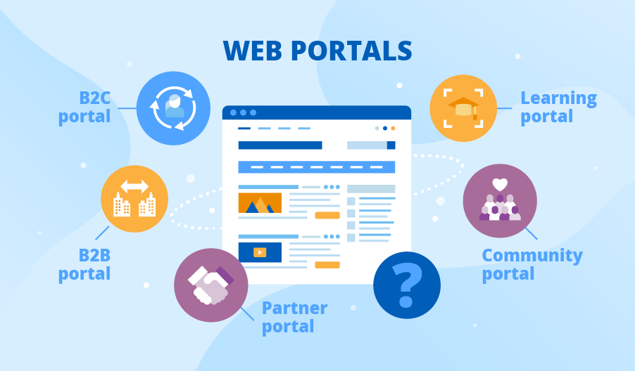
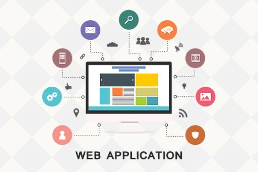
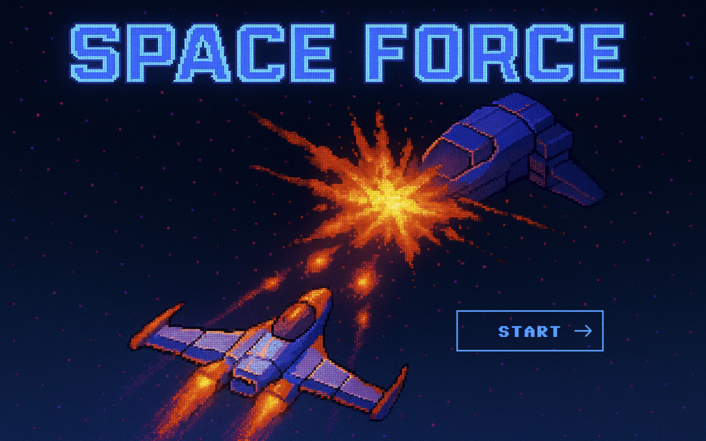
Projekt dyplomowy
Space Force to przeglądarkowa gra 2D typu shoot’em up, nad którą pracuję w ramach pracy dyplomowej. Gracz steruje statkiem, unika zagrożeń i walczy z przeciwnikami. W projekcie skupiłem się na architekturze, która ułatwia dodawanie nowych mechanik i obiektów gry.
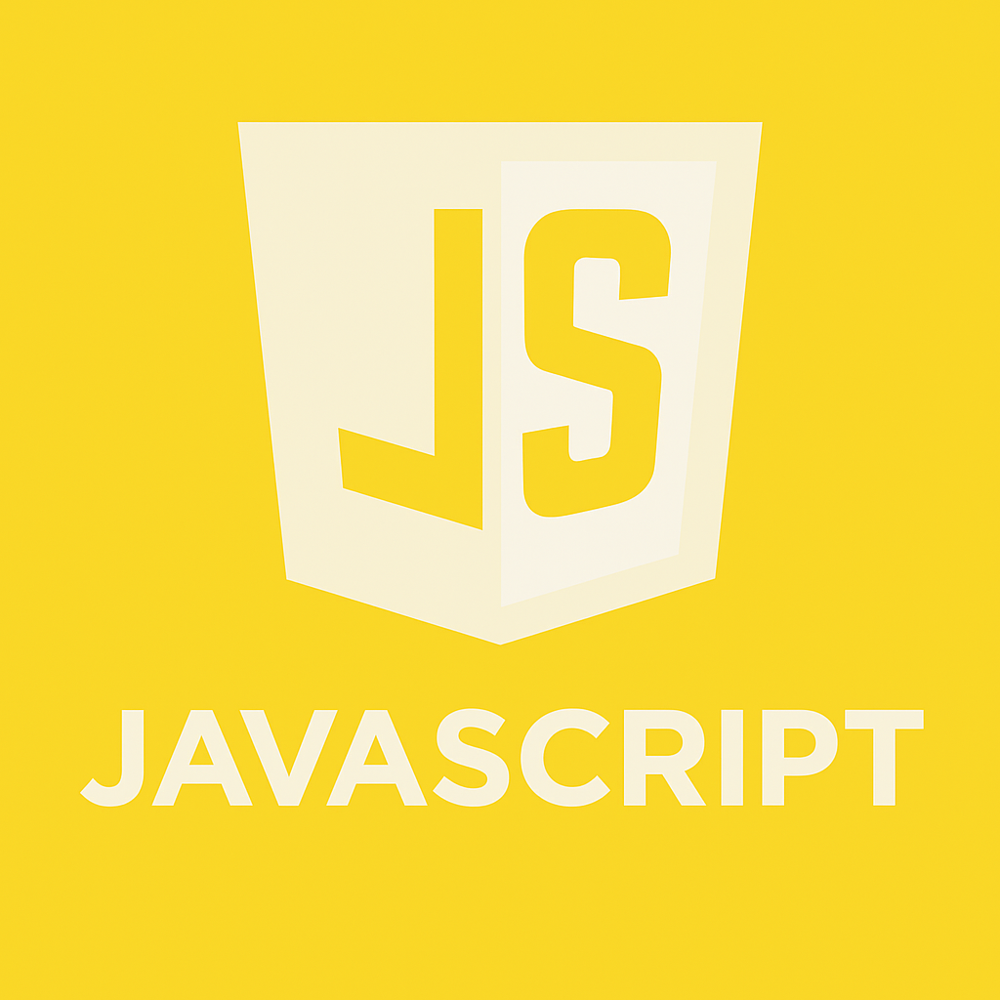
Tworzę interaktywne interfejsy, implementuję logikę aplikacji oraz obsługę zdarzeń i operacji asynchronicznych. W projektach własnych rozwijam również mechanizmy gier 2D.
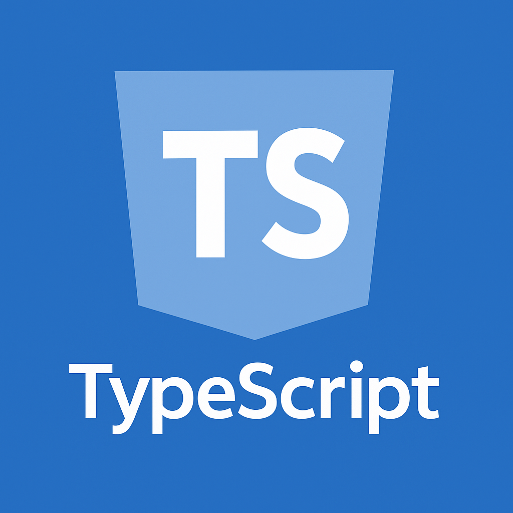
Wykorzystuję statyczne typowanie, interfejsy, klasy i typy generyczne do projektowania modułowego kodu. Stosuję TypeScript podczas tworzenia własnej gry 2D.
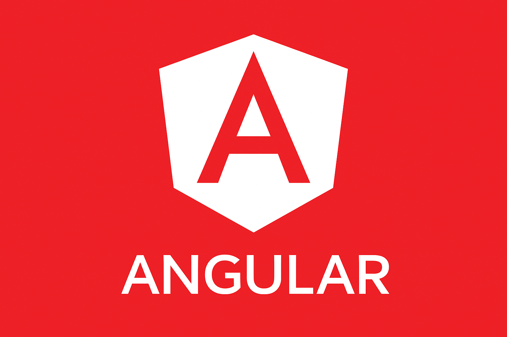
Poznaję Angulara podczas rozwijania projektu własnego. Uczę się organizacji komponentów, usług oraz mechanizmów komunikacji i zarządzania stanem aplikacji.
Tworzę semantyczne struktury stron internetowych, formularze i komponenty interfejsu, dbając o czytelność kodu oraz poprawną organizację dokumentu.
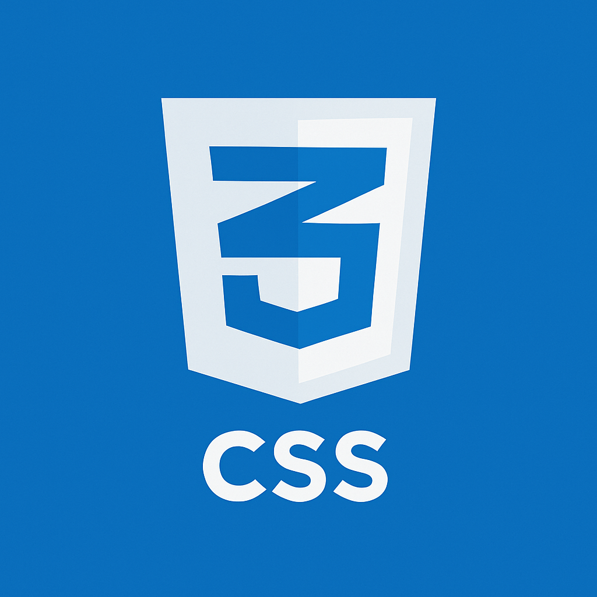
Projektuję i styluję interfejsy internetowe, wykorzystując Flexbox, Grid, SCSS i animacje CSS. Rozwijam umiejętności tworzenia responsywnych układów.
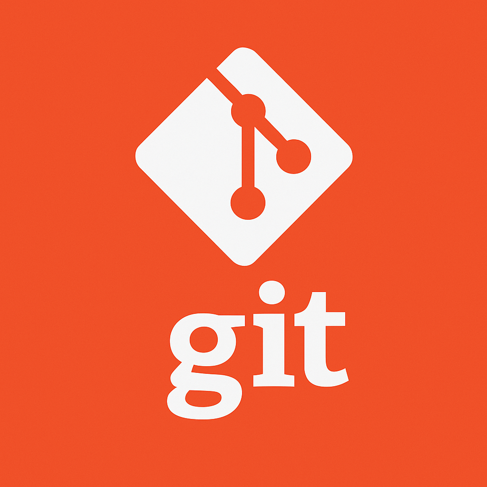
Korzystam z Git do wersjonowania kodu i pracy z gałęziami. Zapisuję zmiany w commitach, synchronizuję lokalne repozytorium z GitHubem i w ten sposób publikuję aktualizacje w GitHub Pages.
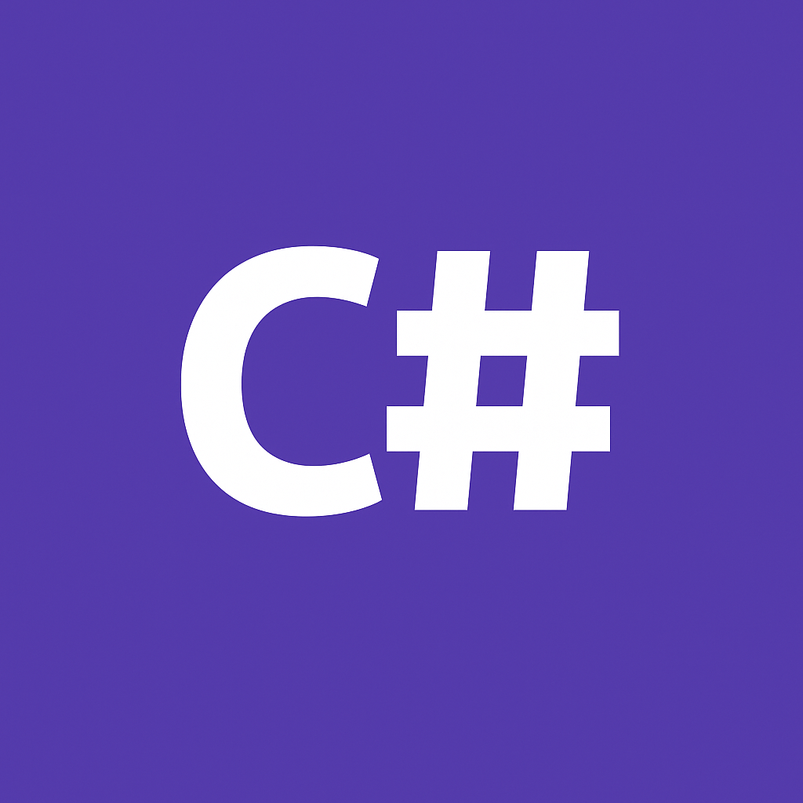
Tworzę aplikacje w C#, wykorzystując programowanie obiektowe. Mam doświadczenie z projektami konsolowymi.
Poznaję ASP.NET Core w ramach projektu własnego, rozwijając podstawowe funkcjonalności backendowe oraz komunikację aplikacji z bazą danych.
Projektuję relacyjne struktury danych i tworzę zapytania SQL. Wykorzystuję klucze główne i obce, relacje oraz operacje na danych w projektach webowych.
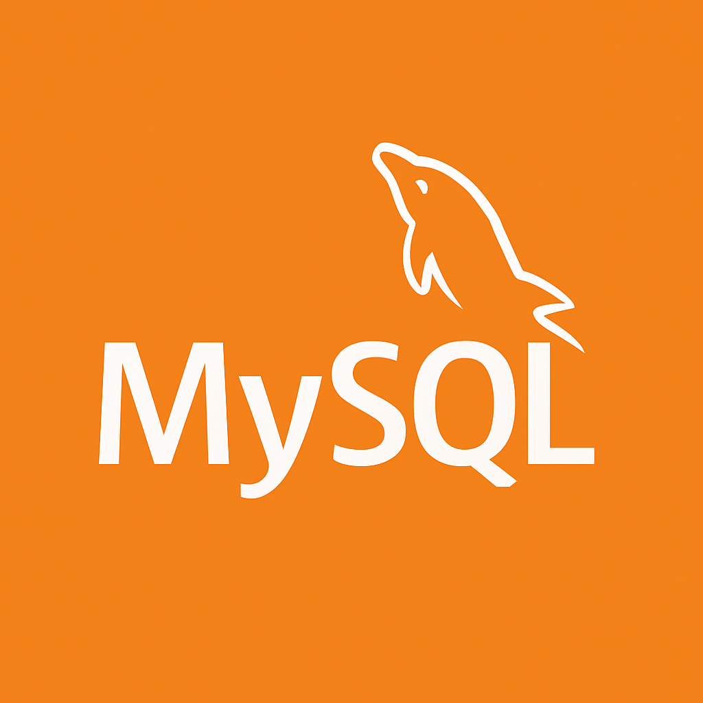
Pracuję z relacyjnymi bazami MySQL, tworząc tabele, relacje i zapytania. Wykorzystuję je w aplikacjach webowych oraz projektach opartych na WordPressie.
Tworzę i modyfikuję funkcjonalności backendowe w PHP, obsługuję formularze oraz komunikację z bazami danych. Wykorzystuję PHP w projektach WordPress.
Tworzę i rozbudowuję motywy oraz funkcjonalności WordPressa. Pracuję z ACF Pro, innymi wtyczkami wtyczkami i integracją kodu PHP z JavaScript.
Zajmuję się optymalizacją techniczną i treściową stron internetowych. Korzystam z Yoast SEO, WebSite Auditor i NeuronWriter.
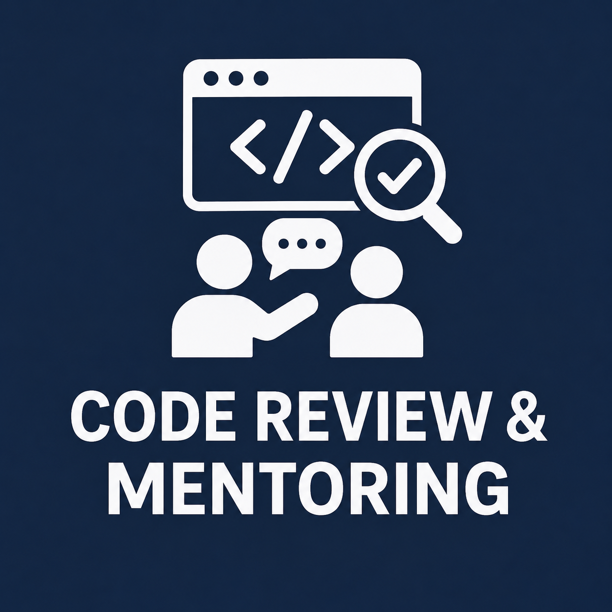
Mam doświadczenie we weryfikowaniu kodu praktykantów, wskazywaniu błędów oraz wspieraniu mniej doświadczonych osób podczas realizacji zadań programistycznych.
Podczas pierwszych praktyk zajmowałem się tworzeniem i rozbudową stron internetowych w HTML, CSS, JavaScript, PHP i WordPress, budując nowe sekcje, proste menu i paski nawigacyjne, ucząc się podstaw pozycjonowania w Yoast SEO oraz pisząc artykuły pod SEO. Poznałem podstawy Git, ACF Pro oraz wtyczki Duplicator, dzięki czemu potrafiłem przenosić projekty na lokalny serwer i pracować nad strukturą treści.
Na kolejnych praktykach poszerzałem wcześniejsze umiejętności o bardziej zaawansowane zadania SEO z użyciem WebSite Auditor, realizowałem pierwszą samodzielną pracę zdalną, tworzyłem sekcje i artykuły pod SEO, a także rozwijałem projekty WordPress przy użyciu Git, ucząc się odpowiedzialnej i samodzielnej pracy nad kodem oraz treściami.
W mojej pierwszej pracy komercyjnej współtworzyłem portal randkowy, implementując formularze (frontend, backend oraz integracje z bazą danych), dbając o walidację i zabezpieczenia, programując nowe sekcje zgodnie z projektami z Figmy, a także uczestnicząc w testowaniu funkcjonalności, zgłaszaniu błędów i ich naprawie podczas produkcji.
Na trzecich praktykach kontynuowałem rozwój umiejętności technicznych i SEO, pracując z NeuronWriter, skupiając się na estetyce, optymalizacji, skalowalności i rozszerzalności kodu, a także usprawniając strukturę i jakość sekcji oraz komponentów tworzonych w WordPress, PHP i JavaScript.
Ostatnie praktyki obejmowały integrację popularnych wtyczek WordPress, samodzielne wykonanie zadań SEO i programistycznych, poprawianie kodu praktykantów, tworzenie złożonych struktur danych w ACF Pro oraz programowanie zaawansowanych menu, nawigacji i dynamicznych sekcji, co znacznie zwiększyło moją samodzielność i jakość pracy.
Ukończyłem technikum informatyczne w Zespole Szkół Rolniczo-Technicznych w Zwoleniu - placówce wyróżniającej się silnym nastawieniem na praktykę oraz nowoczesnym zapleczem technicznym. Nauka łączyła solidne podstawy teoretyczne z intensywnymi ćwiczeniami praktycznymi, co pozwoliło mi już na etapie szkoły średniej zdobyć realne kompetencje w zakresie programowania, administracji systemów i obsługi technologii IT.
Jestem na końcowym etapie studiów inżynierskich na kierunku Informatyka, specjalizacja "Programowanie aplikacji internetowych". Podczas studiów rozwijałem wiedzę i umiejętności z zakresu inżynierii oprogramowania, programowania obiektowego, algorytmiki, metod numerycznych, relacyjnych baz danych oraz sztucznej inteligencji. Szczególnie interesują mnie zagadnienia związane z projektowaniem architektury oprogramowania, tworzeniem rozszerzalnych systemów oraz optymalizacją algorytmów i struktur danych.